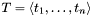
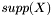
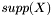
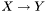
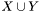
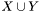

An efficient implemenation of APRIORI algorithm
This program is a very efficient implementation of APRIORI algorithm proposed by Rakesh Agrawal and Ramakrishnan Srikant. APRIORI is the most basic and well-known algorithm to find frequent itemsets in a transactional database.
Frequent Itemset Mining problem
A transactional database consists of sequence of transaction: . A transaction is a set of items ( ). Transactions are often called baskets, referring to the primary application domain (i.e. market-basket analysis). A set of items is often called itemset by the data mining community. The (absolute) support or the occurrence of
). Transactions are often called baskets, referring to the primary application domain (i.e. market-basket analysis). A set of items is often called itemset by the data mining community. The (absolute) support or the occurrence of  (denoted by ) is the number of transactions that are supersets of (i.e. that contain ). The realtive support is the absolute support divided by the number of transactions (i.e. n). An itemset is frequent if its support is greater or equal than a threshold value.
(denoted by ) is the number of transactions that are supersets of (i.e. that contain ). The realtive support is the absolute support divided by the number of transactions (i.e. n). An itemset is frequent if its support is greater or equal than a threshold value.
In the frequent itemset mining problem a transaction database and a relative support threshold (traditionally denoted by min_supp) is given and we have to find all frequent itemsets.
Association Rule Mining problem
This program is also capable of mining association rules. An association rule is like an implication:  means that if itemset X occurs in a transaction, than itemset Y also occurs with high probability. This probability is given by the confidence of the rule. It is like an approxiamtion of p(Y|X), it is the number of transactions that contain both X and Y divided by the number of transaction that contain X, thus  . The relative support of the association rule is the support of itemset . The lift of tries to capture the independence of the antecedent and the consequent of the rule:
. The relative support of the association rule is the support of itemset . The lift of tries to capture the independence of the antecedent and the consequent of the rule:  An association rule is valid if its confidence, support and lift are greater than or equal than corresponding threshold values.
An association rule is valid if its confidence, support and lift are greater than or equal than corresponding threshold values.
In the association rule mining problem a transaction database and a relative support threshold (traditionally denoted by min_supp), a confidence threshold (traditionally denoted by min_conf), and a lift threshold is given and we have to find all valid association rules.
Generated on Tue Dec 23 23:59:00 2003 for APRIORI algorithm by
 1.3.4
1.3.4